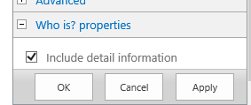
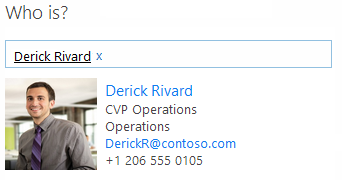

Summary: Learn how to use the Search REST API and people picker and take advantage of app part dynamic resizing by using the app part edit mode. The sample displays an app part that retrieves information about a SharePoint user.
Provided by: Yina Arenas, Microsoft Corporation
When you deploy and start the app, you can add the Who Is? app part to a page on the host web. Figure 1 shows how the app part will appear on the page. It displays the people picker and uses the search REST API to get information about a SharePoint user.
You can use the Web Part menu to make the app part display less information. Choose the Who is? properties link and clear the Include detail information check box.

Now the app part will only include user basic information, and it gets dynamically resized.

Prerequisites
This sample requires the following:
-
A SharePoint 2013 Developer Site. This site can be in Office 365 or in an on-premises installation of SharePoint 2013 that is enabled for apps. See How to: Set up an on-premises development environment for apps for SharePoint to create an on-premises SharePoint Developer Site.
-
Visual Studio 2012 and Office Developer Tools for Visual Studio 2012 installed on your development computer.
Key components
The app's AppPart project includes the following:
-
A Pages folder that contains two .aspx pages:
-
Default.aspx is the default page of the SharePoint-hosted app. This is the page that you see when you start the app from SharePoint instead of including it as an app part.
-
Part.aspx is the page that appears inside the app part.
-
Configure the sample
Follow these steps to configure the sample.
-
Open the AppPart.sln file in Visual Studio 2012.
-
In the Properties pane, change the Site URL property. This is the absolute URL of your SharePoint site.
Build the sample
Press F5 to build and deploy the app.
Run and test the sample
-
Choose Trust It on the consent page to grant permissions to the app.
-
Return to the host web of your SharePoint site. Navigate to a page that can include Web Parts.
-
In the ribbon above the page, choose Page, Edit, Insert, App Part.
-
Select the Who Is? app part and insert it on the page.
-
In the ribbon, choose the Save button.
-
Enter a valid user name in the text box so that the People Picker can resolve it.
Troubleshooting
The following table lists common configuration and environment errors that prevent the sample from running or deploying properly and ways to solve them.
|
Problem |
Solution |
|---|---|
|
Visual Studio doesn't open the browser after you press F5. |
Set the app for SharePoint project as the startup project. |
|
HTTP error 405 Method not allowed. |
Locate the applicationhost.config file in %userprofile%\Documents\IISExpress\config. Locate the handler entry for StaticFile, and add the verbs GET, HEAD, POST, DEBUG, and TRACE. |
Change log
|
First release |
June 2013 |